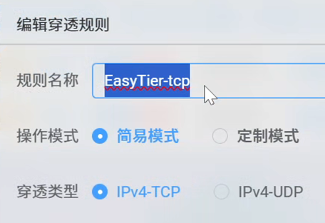
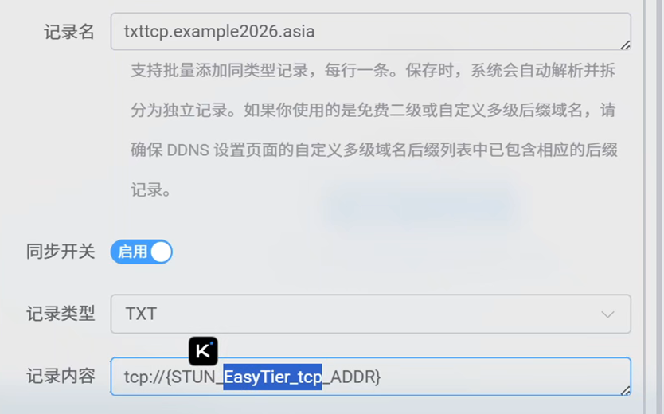
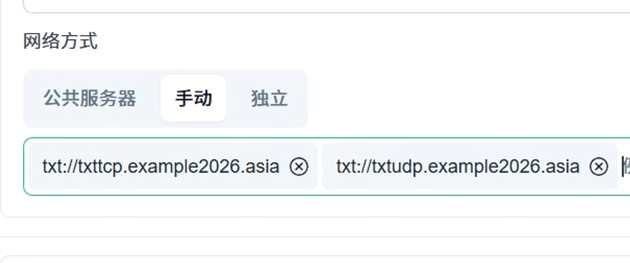
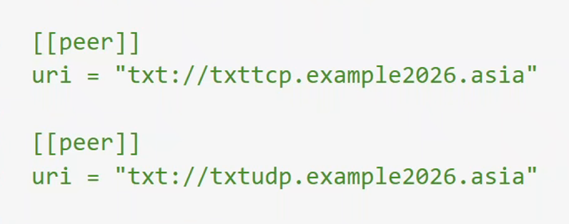

利用 Lucky 域名解析与 STUN 内网穿透的功能建立 EasyTier TXT 格式服务器节点
前言
EasyTier 是一款非常优秀的异地组网工具，官网描述它是“一个简单、安全、去中心化的异地组网方案”。🌐
不过，因为一些不明的原因，官方提供的公共服务器节点目前已经不可用了 😔。有钱的大佬可以选择自购云服务器来搭建节点，但对咱们普通玩家来说，服务器续费实在太贵了，哪怕是首年优惠，到后面也吃不消。我们的目标很简单：尽量不花钱，或者只花一点点钱。本文这个方案，只需要你花点小钱买个域名，相比养一台服务器，便宜太多了 💸。
多数家庭宽带目前都没有固定的公网 IPv4，否则就能很方便地直接搭建 EasyTier 服务器节点。反过来看，变化着的公网 IPv4 带来的一定的“不确定性”，其实也在一定程度上保护了家庭网络的安全——毕竟 IP 和端口并不会长期固定暴露。但这也给自建 EasyTier 节点增加了难度。
这时候，就轮到一个强大的工具登场了——Lucky 🍀。它集成了 IPv6/IPv4 端口转发、Web 服务、动态域名、语音助手网络唤醒、IPv4 内网穿透、计划任务、自动证书等一大堆实用功能。
咱们的解决思路如下 👇：
- 🔌 利用 Lucky 的 STUN 内网穿透 功能，获取一个可公网访问的 IP 地址 + 端口；
- 🌍 将上面拿到的 IP 地址 + 端口，通过 Lucky 的 动态域名解析 功能，实时写入你自己域名的一条 TXT 记录里；
- 🖧 在配置 EasyTier 客户端时，把这条 TXT 记录直接填到服务器节点位置即可。
这个方案能成立的关键在于：
- Lucky 同时具备 STUN 内网穿透与动态域名解析能力，能将不断变化的穿透地址自动同步到 TXT 记录；
- EasyTier 也原生支持 TXT 格式的服务器节点，可以直接读取域名下的 TXT 记录，动态发现你的节点。
只要跟着这个思路走，哪怕家里的公网 IP 一直在变，你的 EasyTier 节点也能被稳定发现，而且整体花费几乎只有域名的钱，安全性也更有保障 🔐。
配置关键点（适用于非新手）
关键点一
记录STUN穿透规则名称，以及穿透类型：TCP还是UDP，用于动态域名解析用

关键点二
动态域名解析填写关键点：
记录名：自己喜欢的域名前缀加域名

记录类型：TXT，记录内容：
tcp://{STUN_穿透规则名称_ADDR}udp://{STUN_穿透规则名称_ADDR}例如关键点一中为 tcp，穿透规则名称为 EasyTier-tcp，则记录内容为
tcp://{STUN_EasyTier-tcp_ADDR}关键点三
EasyTier 服务端、客户端节点填写格式：
txt://txt记录的域名上述为例应在GUI界面填写
txt://txttcp.example2026.asiatxt://txtudp.example2026.asia
在config.yaml中填写
[[peer]]
uri = "txt://txttcp.example2026.asia"
[[peer]]
uri = "txt://txtudp.example2026.asia"
详细配置方式（飞牛OS上为例）
（阿里云）域名注册与 AccessKey 配置
首先你得注册一个域名，以阿里云为例，依据个人偏好注册一个最便宜的域名
步骤简述：
-
搜索阿里云域名注册
-
输入想要的域名，并选择注册
-
付款购买
-
待注册局审核完成
-
实名认证（仅一次，后续购买域名无需）
-
创建 AccessKey，以便后续 Lucky 中配置使用
-
保存 AccessKey
Lucky 安装与配置
步骤简述：
- 安装 Lucky
- 基础安全配置
- STUN内网穿透配置，穿透EasyTier内网服务 IP 和端口
- 动态域名解析，将上述穿透后的 IP 和端口，以 TXT 记录解析到购买的阿里云域名上
EasyTier 服务端安装与配置
步骤简述：
-
启用飞牛docker
-
新建 EasyTier 配置文档，/vol1/1000/Docker/EasyTier
-
创建 EasyTier compose ，安装EasyTier
version: '3.8' services: watchtower: # 用于自动更新easytier镜像，若不需要请删除这部分 command: --interval 3600 --cleanup --label-enable container_name: watchtower environment: - TZ=Asia/Shanghai - WATCHTOWER_NO_STARTUP_MESSAGE image: containrrr/watchtower restart: always volumes: - /var/run/docker.sock:/var/run/docker.sock easytier: restart: always labels: com.centurylinklabs.watchtower.enable: 'true' privileged: true mem_limit: 0m container_name: easytier hostname: fn_easytier network_mode: host volumes: - /vol1/1000/Docker/EasyTier:/root environment: - TZ=Asia/Shanghai image: easytier/easytier:latest # 国内用户可以使用 m.daocloud.io/docker.io/easytier/easytier:latest command: -c /root/config.yaml -
其他端配置 EasyTier 验证组网效果
手稿与AI润色
如下是我的手稿，上述内容由以下内容借助AI润色而来，关键提示词：理解上述内容，优化润色表达，可适当添加Emoji，此外语气要求为教程语气，贴近读者
如官网描述“一个简单、安全、去中心化的异地组网方案”，EasyTier 是一款优秀的异地组网软件。
因一些不明的原因，官方提供的服务器节点已不可用。
有钱的大佬可以自购服务器建立节点，但对于我们普通玩家，买服务器太贵了，可能有首年优惠，但是续费太贵，我们普通玩家肯定是不想花钱的，或者说尽可能少花钱，本文涉及的方案就是得花钱买个域名，域名相比服务器就便宜多了。
当前家用宽带一般都是没有固定的公网 IPv4 的，不然就可以简单的建立 EasyTier 服务器节点了，但同时以此方式建立的服务器节点 IP 与端口固定，万一暴露，对家庭网络来说不是一件安全的事情。
家庭宽带一般没有固定的公网 IPv4，而是在一个变化的变化的公网 IPv4 下的大局域网，因“不固定”这一特性正好提供了一定的安全性，但为我们建立 EasyTier 服务器建立节点增加了一定的困难。
Lucky 这一强大的软件，如官网所述：IPv6/IPv4 端口转发、Web服务、动态域名、语音助手网络唤醒、IPv4 内网穿透、计划任务、自动证书等。
我们的思路是：
1、利用 Lucky 的STUN 内网穿透功能，获得一个可公网访问的 IP 地址+端口；
2、将上述获得 IP 地址+端口，利用Lucky 的域名解析功能，解析到自己域名一条 TXT 记录上；
3、在配置使用 EasyTier 时，将上述 TXT 记录写到服务器节点处；
我们这个方案可行的关键是：
1、利用了 Lucky 域名解析与 STUN 内网穿透的功能；
2、EasyTier 支持 TXT 格式服务器节点